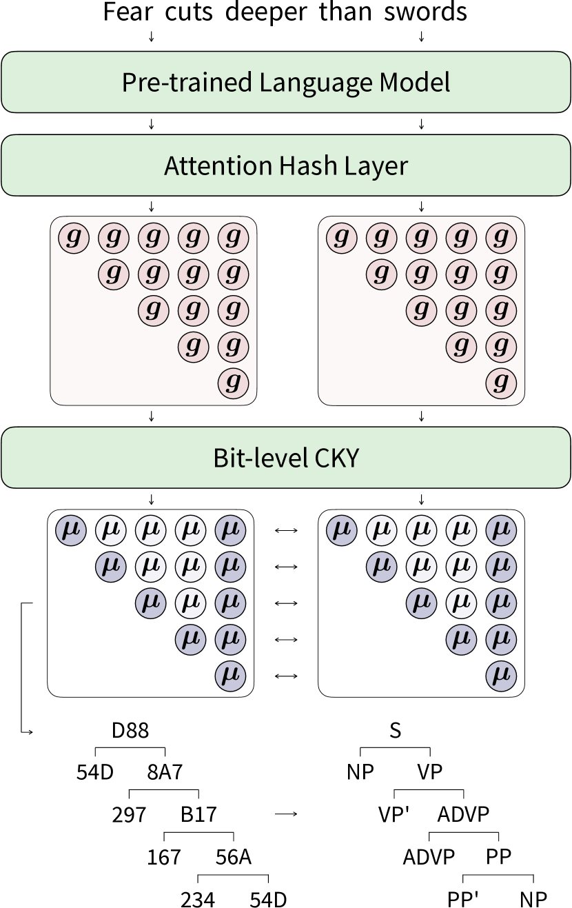
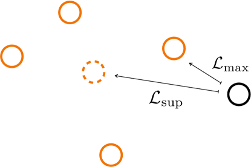

To be Continuous, or to be Discrete, Those are Bits of Questions
Abstract
Recently, binary representation has been proposed as a novel representation that lies between continuous and discrete representations. It exhibits considerable information-preserving capability when being used to replace continuous input vectors. In this paper, we investigate the feasibility of further introducing it to the output side, aiming to allow models to output binary labels instead. To preserve the structural information on the output side along with label information, we extend the previous contrastive hashing method as structured contrastive hashing. More specifically, we upgrade CKY from label-level to bit-level, define a new similarity function with span marginal probabilities, and introduce a novel contrastive loss function with a carefully designed instance selection strategy. Our model111https://github.com/speedcell4/parserker achieves competitive performance on various structured prediction tasks, and demonstrates that binary representation can be considered a novel representation that further bridges the gap between the continuous nature of deep learning and the discrete intrinsic property of natural languages.
To be Continuous, or to be Discrete, Those are Bits of Questions
Yiran Wang Masao Utiyama National Institute of Information and Communications Technology (NICT) yiran.wang@nict.go.jp mutiyama@nict.go.jp
1 Introduction
Bridging the gap between the continuous nature of deep learning and the discrete intrinsic property of natural languages has been one of the most fundamental and essential questions since the very beginning. Continuous representation makes the training of neural networks effective and efficient. Nowadays, representing discrete natural languages in continuous format is the first and foremost step to leveraging the capabilities of deep learning. One could even argue that the exhilarating advancements in natural language processing in the past decade can largely be attributed to the word embedding technique, as it is the first successful attempt.

Word embedding NIPS2000_728f206c; mikolov2013efficient; mikolov2013distributed technique replaces the vocabulary-sized one-hot word representations with compact continuous vectors. Since then, input and output layers incorporating embedding matrices have become standard components in neural models. Discrete tokens are mapped into continuous vectors by looking up the corresponding index in it, and continuous vectors are mapped back to discrete tokens by searching the most similar one from it. However, the essence of this operation is still one-hot encoding, even the following subword tokenization techniques sennrich-etal-2016-neural; kudo-2018-subword attempt to mitigate this issue by decomposing words into subword units, these approaches still require the building vocabularies and embedding matrices that consists of tens of thousands of tokens. In the era of large language models openai2023gpt4; touvron2023llama, these embedding matrices typically account for a considerable number of parameters, especially in cross-lingual models. Besides, parameter updates also solely rely on the sparse gradients backpropagated to the limited tokens present in sentences. Moreover, imposing structural constraints on continuous representations to model relations among tokens is considered difficult, whereas it is easy and common in discrete representations. Therefore, further bridging the gap has become increasingly important nowadays.
Recently, wang-etal-2023-24 introduced a novel binary representation that lies between continuous and discrete representations. They proposed a contrastive hashing method to compress continuous hidden states into binary codes. These codes contain all the necessary task-relevant information, and using them as the only inputs can reproduce the performance of the original models. Unlike associating each token with only a single vector, their method allocates multiple bits to each token, and the token representation can be constructed by concatenating these bit vectors. In other words, their binary representation breaks tokens down into combinations of semantic subspaces. As a result, replacing the token embedding matrix in the input layer with a tiny bit embedding matrix without sacrificing performance becomes possible.
In this paper, we explore the possibility of further introducing this representation to output layers. In the input layer, structural information can only be implicitly obtained by introducing the task loss as an auxiliary. However, the output layers often involve complex intra-label constraints, especially for structured prediction tasks, structural information can and should be explicitly preserved along with plain label information. Therefore, we attempt to endow models with this capability by extending previous contrastive hashing to structured contrastive hashing.
We begin by upgrading the CKY, which parses sentences, returns spans with discrete labels, to support binary format labels (§3.1). Subsequently, we define a new similarity function by using span marginal probabilities obtained from this bit-level CKY (§3.2) to jointly learn label and structural information. Furthermore, we conduct a detailed analysis of several widely used contrastive learning losses, identifying the geometric center issue, and introduce a novel contrastive learning loss to remedy it (§3.3) through carefully selecting instances. By doing so, we show that it is feasible to introduce binary representation to output layers and have them output binary labels on trees. Moreover, since our model is based on contrastive learning, it also benefits from its remarkable representation learning capability, resulting in better performance than existing models. We conduct experiments on constituency parsing and nested named entity recognition. Experimental results (§4.2) demonstrate that our models achieve competitive performance with only around 12 and 8 bits, respectively.

2 Background
2.1 Constituency Parsing
For a given sentence , constituency parsing aims at detecting its hierarchical syntactic structures. Previous work stern-etal-2017-minimal; gaddy-etal-2018-whats; kitaev-klein-2018-constituency; kitaev-etal-2019-multilingual; ijcai2020p0560 decompose tree score as the sum of its constituents scores,
| (1) |
where and indicate the left and right boundary of the -th span, and stands for the label. Constituent score reflects the joint score of selecting the specified span and assigning it the specified label. Previous work kitaev-klein-2018-constituency; ijcai2020p0560 commonly compute this score using a linear or bilinear component. Under the framework of graphical probabilistic models, they can efficiently compute the conditional probability by applying the CKY algorithm.
| (2) |
is commonly known as the partition function which enumerates all valid constituency trees.
Besides, marginal probability is also frequently mentioned. It stands for the proportion of scores for all trees that include the specified span with the specified label. As noted by eisner-2016-inside, computing the partial derivative of the log partition with respect to the span score is an efficient approach to obtain the marginal probability.
| (3) |
Intuitively, marginal probability indicates the joint probability of selecting a specified span with a specified label. Therefore, it is easy to notice that merely summing the marginal probabilities for all labels of a given span does not always yield 1, i.e., , as there is no guarantee that this span will be selected. In other words, marginal probabilities contain not only label information but also structural information. If a span is unlikely to be selected, its marginal probability will not be high regardless of the label.
2.2 Contrastive Hashing
Contrastive learning He_2020_CVPR; gao-etal-2021-simcse; NEURIPS2020_d89a66c7 is an effective yet simple representation learning method, which involves pulling together positive pairs and pushing apart negative pairs in a metric space. Recently, wang-etal-2023-24 extended this approach as contrastive hashing. They append an untrained transformer to the end of a pre-trained language model and use its attention scores for both task learning and hashing. Specifically, its entire attention probabilities are used to compute hidden states for downstream tasks as usual, and its diagonal entries of the attention scores are employed for hashing.
| (4) | |||
| (5) |
Where and are parameters, are hidden states, is the head dimension. These two learning objectives share the same attention matrix, therefore, task-relevant information is implicitly ensured to be preserved in these binary codes.
More specifically, to leverage the multi-head mechanism, they allow each head to represent one and only one bit. By increasing the number of heads to , they obtain attention scores from different semantic aspects. During the inference stage, codes are generated by binarizing these scores,
| (6) | |||
During the training stage, they approximate Hamming similarity by computing the cosine similarity, with one of its inputs binarized first.
| (7) |
Apart from this similarity function, they also propose a novel loss by carefully selecting instances and eliminating potential positives and negatives. They fine-tune the entire model using both the downstream task loss and the contrastive hashing loss, i.e., . Experiments show that they can reproduce the original performance on an extremely tiny model using only these 24-bit codes as inputs. Therefore, they claim that these codes preserve all the necessary task-relevant information.
3 Proposed Methods
Our model attempts to learn parsing and hashing simultaneously with a single structured contrastive hashing loss. In other words, we try to introduce the binary representation to output layers and eliminate the need for the above. To achieve this, we first extend the CKY module to support binary labels (§3.1). Then, we replace the cosine similarity with a newly defined similarity function (§3.2) based on span marginal probabilities, because it contains not only label information but also structural information. After that, we analyze several commonly used contrastive losses, and propose a new one (§3.3) to mitigate the geometric center issue as shown in Figure 2. After training, we build code vocabulary by mapping binary codes back to their most frequently coinciding labels.
3.1 Constituency Parsing with Bits
We decompose tree scores as the sum of constituent scores as well, but with discrete labels replaced with binary codes .
| (8) | |||
| (9) |
Where represents the span score with the -th bit position assigned as value . We additionally assume that the bits are independent of each other, so we simply add their scores together to obtain the span score .
Following wang-etal-2023-24, we maintain the one-head-one-bit design and also utilize attention scores for hashing. Furthermore, since we attempt to eliminate , we do not need to compute the final outputs of the transformer layer. Therefore, we only retain the query and key to calculate the span score for getting in the -th bit position by using the token hidden states of the left and right span boundary and . For the case, we simply leave its score as 0.
| (10) | ||||
| (11) |
With these definitions, we can extend the CKY module to the bit-level and calculate the conditional probability and partition function using Equation 2 as usual. Additionally, the bit-level marginal probability is defined as below.
| (12) |
3.2 Contrastive Hashing with Structures
wang-etal-2023-24 emphasize that the key to their loss function is first hashing one of its inputs as codes and then calculating the similarity between continuous scores and the discrete codes. We define our similarity function in a similar way. Since we can straightforwardly obtain the span marginal probabilities with Equation 12, we then binarize scores into codes towards the sides with the higher span marginal probabilities.
| (13) | |||
Naturally, we define the similarity function between two spans as the marginal probability of selecting -th span while assigning as its code.
| (14) |
As we mentioned above (§2.1), we use marginal probabilities to define the similarity function because they reflect the joint probability of both selecting the specified span and assigning the specified label to it. If a span is unlikely to be selected as a phrase, then both and will be close to zero. Thus, the model learns structural and label information simultaneously. By leveraging this similarity function, we extend contrastive hashing to structured contrastive hashing. This approach eliminates the label embedding from the output layer, as the hashing layer returns labels in binary format now.
Moreover, for a sentence with tokens, the total number of spans is , and bit-level CKY returns marginal probabilities for them all. However, using them for contrastive hashing leads to an intractable time complexity of . In practice, we select only spans from the target trees, reducing the number of spans to to maintain the time complexity at . This is another reason why we prefer marginal probability.
3.3 Instance Selection
Following the contrastive learning framework gao-etal-2021-simcse; wang-etal-2023-24, we feed sentences into the neural network twice to obtain two semantically identical but slightly augmented representations. In this way, we get two different marginal probabilities for each span. We calculate contrastive losses by comparing each span across views and average them as the batch loss (§3.5). Note that each batch contains spans from multiple sentences, so our contrastive hashing also compares spans across different sentences. For clarity, we omit subscripts in the following equations when there is no ambiguity.
As we mentioned above (§2.2), the fundamental concept of contrastive learning is pulling together positives and pushing apart negatives. The most commonly used objective function is defined as,
| (15) |
and stands for the negative and positive sets, respectively. We additionally define as the set that contains span as its only entry. It is obvious that always holds.
In addition, the operator is commonly considered a differentiable approximation of the operator. Therefore, by slightly tweaking the equation, we reinterpret it as below.
| (16) |
Moreover, NEURIPS2020_d89a66c7 also proposed a loss function for supervised settings where multiple positives are present. By applying the same tricks, we can rewrite the loss function as follows.
| (17) |
wang-etal-2023-24 have also proposed a contrastive loss function for hashing. They claim that identical tokens may even not contain identical information due to different contexts. Therefore, they treat as potential false positives and negatives, and replace it with in both terms.
| (18) |
By unifying them all in a common format, we can observe that their main differences lie in the instance selection strategies. Both and pull instances towards the geometric center of their positive instances in the second term. The only difference is that assumes there is only one positive instance, making the geometric center merely -th span itself, whereas has access to the ground-truth labels and thus can obtain a more specific center. On the other hand, differs from in the first term, as it suggests that dividing instances solely based on ground-truth labels may also introduce false positives and negatives. Therefore, excludes potential false positives from this term. Additionally, it is noteworthy that among these three losses, all first terms employ , while all second terms use . Intuitively speaking, the operator pulls towards the most likely true positive instance, while operator pulls towards the geometric center of all positive instances. Although it is hard to determine whether instances in are false positives or not, what we can be certain of is that there is at least one true positive instance, since always holds. Therefore, using the operator to pull towards the most probable one is a more effective approach.
| (19) |
3.4 Architecture
As shown in Figure 1, our model consists of a pre-trained language model, an attention hash layer, and a bit-level CKY. The attention hash layer derives from the transformer layer, but it preserves only the query and key components for calculating span score . All the other components, such as layer normalization ba2016layer and feed-forward layers, are removed, as there is no need to calculate hidden states.
Compared with existing constituency parsers kitaev-klein-2018-constituency; ijcai2020p0560, the output layer of our parser does not include label embedding matrices. Instead, it utilizes the attention hash layer and a bit-level CKY to predict the binary representation of labels. Consequently, the number of parameters of this part changes from to two .
3.5 Training and Inference
During the training stage, we feed sentences into the model twice to obtain marginal probabilities and of the two views, and binarize spans on the target trees and using Equation 13, respectively. Besides, we use the ground-truth labels to divide and . After that, we calculate the contrastive hashing loss for each span with Equation 19 and average them as the batch loss.
| (20) |
After training, we switch the model to evaluation mode, i.e., turning off dropouts JMLR:v15:srivastava14a, and then feed all the training sentences into the model again. During this pass, we count the frequency of each pair of binary code and its corresponding ground-truth label, i.e., . Then, we can reconstruct a code vocabulary to map codes back to their most frequently coinciding labels.
| (21) |
During the inference stage, we search the most probable tree from all valid trees using the Cocke-Kasami-Younger (CKY) algorithm kasami1966efficient. Our bit-level parsers return span boundaries and their binary codes, we translate them back to labels by using the Equation above.
Model Ptb Ctb Bert XLNet Bert kitaev-etal-2019-multilingual 95.59 - 91.75 zhou-zhao-2019-head 95.84 96.33 92.18 mrini-etal-2020-rethinking - 96.38 92.64 ijcai2020p0560 95.69 - 92.27 NEURIPS2020_f7177163 95.79 96.34 93.59 tian-etal-2020-improving 95.86 96.40 92.66 nguyen-etal-2021-conditional 95.70 - - xin-etal-2021-n 95.92 - 92.50 cui-etal-2022-investigating 95.92 - 92.31 yang-tu-2022-bottom 96.01 - - yang-tu-2023-dont 96.04 96.48 92.41 Ours (6 bits) 94.81 95.70 91.45 Ours (8 bits) 95.95 96.34 91.99 Ours (10 bits) 96.03 96.37 92.25 Ours (12 bits) 96.00 96.36 92.33 Ours (14 bits) 96.02 96.43 92.06 Ours (16 bits) 95.98 96.40 92.18
Model Ace’4 Ace’5 Genia Bert Bert Bert wang-etal-2020-pyramid 86.28 84.66 79.19 wang-etal-2021-nested 86.06 84.71 78.67 Xu_Huang_Feng_Hu_2021 86.30 85.40 79.60 Fu_Tan_Chen_Huang_Huang_2021 86.60 85.40 78.20 yu-etal-2020-named 86.70 85.40 80.50 shen-etal-2021-locate 87.41 86.67 80.54 ijcai2021p0542 87.26 87.05 80.44 lou-etal-2022-nested 87.90 86.91 78.44 zhu-li-2022-boundary 87.98 87.15 - yang-tu-2022-bottom 86.94 85.53 78.16 Ours (4 bits) 85.81 83.37 73.54 Ours (6 bits) 87.39 85.23 78.57 Ours (8 bits) 87.93 85.90 78.79 Ours (10 bits) 87.87 85.75 78.72 Ours (12 bits) 87.52 85.26 78.40
4 Experiments
4.1 Settings
We validate the effectiveness of our model on various structured prediction tasks, i.e., constituency parsing and nested named entity recognition tasks. Dataset statistics can be found in Appendix LABEL:sec:data_stats.
For the constituency parsing task, we conduct experiments on the datasets PTB marcus-etal-1993-building and CTB5.1 XUE_XIA_CHIOU_PALMER_2005. We transform the original trees into those of Chomsky normal form and adopt left binarization with NLTK bird-loper-2004-nltk. We study model performance by employing pre-trained language models with checkpoints bert-large-cased devlin-etal-2019-bert and xlnet-large-cased NEURIPS2019_dc6a7e65 for PTB, and bert-base-chinese for CTB.
For nested named entity recognition task, we use datasets ACE2004 doddington-etal-2004-automatic, ACE2005 walker2006ace, and GENIA kim2003genia. We follow the data splitting of shibuya-hovy-2020-nested. Nested named entity recognition, as Fu_Tan_Chen_Huang_Huang_2021 claimed, can be considered as a partially observed constituency parsing task. Therefore, we add a dummy span TOP as the top span to each sentence to ensure all the observed spans form a valid parsing tree, and apply the same transformation and binarization on it. We use the checkpoint bert-large-cased on ACE2004 and ACE2005, and for the GENIA dataset we use dmis-lab/biobert-large-cased-v1.1 Lee_2019 as the pre-trained language model.
We utilize the deep learning framework PyTorch NEURIPS2019_bdbca288 to implement our models and download pre-trained lanugage checkpoints from huggingface/transformers wolf-etal-2020-transformers.
To keep the training of contrastive hashing stable, we collect sentences until the total number of tokens in each batch reaches 1024. We employ Adam optimizer kingma2017adam; loshchilov2018decoupled, and the total number of training steps of constituency parsing and nested named entity recognition are and , and the warm-up are and steps, respectively. To provide harder negatives by augmenting inputs, we also randomly mask a portion of tokens as [MASK].
Experiments are all conducted on a single NVIDIA Tesla V100 graphics card, the total training wall time is around 3 hours and 1 hour, respectively. All experiments are run with two different random seeds and the reported numbers in the following tables are their averages.
| Neg | Pos | Loss | Ptb |
|---|---|---|---|
| 81.08 | |||
| 95.58 | |||
| - | 95.75 | ||
| 94.26 | |||
| - | 95.88 | ||
| 96.03 |
4.2 Main Results
Our model consistently achieves competitive performance on various structured prediction tasks and datasets, as presented in Table 1 and Table 2.
For constituency parsing, our models reach the peak with around 12 bits. Continuously increasing the number of bits does not further improve performance, on the contrary, it leads to a slight decline. We attribute this to the disproportionately large hashing space, as the amount of information carried by each task and dataset is fixed. For example, assigning bits to a task with only labels leads to an extreme case. Models in this case tend to produce the most trivial bit-level one-hot representation, making them nothing different from traditional static embedding models. On the contrary, decreasing the number of bits to fewer than 8 bits is also harmful, due to the insufficient representation capability. Besides, our models outperform almost all previous graph-based methods that rely on maximizing the log-likelihoods of target trees kitaev-etal-2019-multilingual; mrini-etal-2020-rethinking; ijcai2020p0560; xin-etal-2021-n; cui-etal-2022-investigating. Therefore, we claim that leveraging contrastive learning is beneficial to representation learning.
For nested named entity recognition, all datasets show the best performance at the 8-bit settings, and decreasing to fewer than 6 bits also results in insufficient representing capability. Similarly, our methods outperform the previous sequential labeling methods shibuya-hovy-2020-nested; wang-etal-2021-nested; xin-etal-2021-n and graph-based methods Fu_Tan_Chen_Huang_Huang_2021; lou-etal-2022-nested. In addition, some other papers yu-etal-2020-named; shen-etal-2021-locate; ijcai2021p0542; zhu-li-2022-boundary propose to straightforwardly enumerate all spans and directly train the model to classify them. These methods currently show the best performance, our method can also achieve comparable results to them.
Label Code Coverage (%) S 110110001000 110100001101 S’ 101100001000 110110101001 NP 010101001101 NP’ 010001010100 VP 100010100111 VP’ 001010010111 ADJP 100100000111 000011010110 ADJP’ 000000010110 ADVP 101100010111 000101100111 ADVP’ 001100010110 000101110110